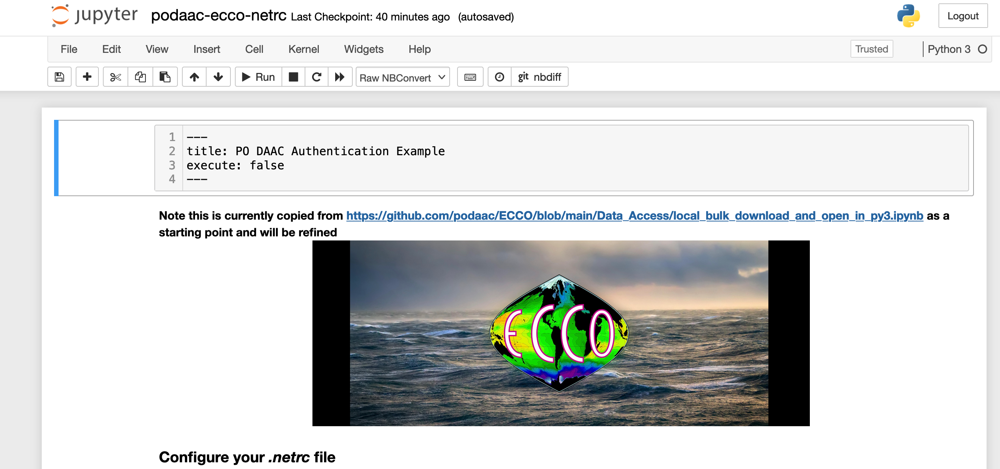

Workflow
Workflow for contributing to our Cookbook
Your Quarto workflow can be from the Command Line (bash), Python, or R. Its book chapters can be many file types, including .md , .ipynb, .Rmd, and .qmd. In all cases narrative and prose can be written in markdown, and chapters without code to execute can be written in .md. This workflow can streamline collaboration for scientific & technical writing across programming languages.
In progress!
GitHub Workflow
First let’s talk about the GitHub part of the workflow.
We will work in branches so as to not overwrite each other’s work, and let GitHub do what it does best.
The main branch will be the current approved version of the book. The main branch is what displays at https://nasa-openscapes.github.io/earthdata-cloud-cookbook.
A nice clean workflow with branches is to consider them temporary. You pull the most recent from main, you create a branch locally, you make your edits, you commit regularly, then you push back to github.com, create a pull request for it to be merged into main, and once approved, you delete the branch on github.com and also locally. That’s the workflow we’ll walk through here. A great resource on GitHub setup and collaboration is Happy Git with R (R-focused but fantastic philosophy and bash commands for setup, workflows, and collaboration).
The following assumes you’re all setup from the previous chapter.
Branch setup
First off, check what branch you’re on. If you need to switch branches, use git checkout
git branch # returns all local branches
git checkout main # switch branch to mainIf you are already on the main branch, Git will tell you.
If you have any residual branches from before, start off by deleting them (assuming they were temporary and have been merged into github.com — good to check first!)
git branch -d branch-hameNext, create a new branch, then switch to that branch to work in. git checkout -b branch-name is a one-step approach for git branch branch-name git checkout branch-name (read more).
git checkout -b branch-name # create and switch to new branchTime for your Quarto workflow – see below. After you’ve made some edits, you’ll commit your changes.
Commit changes
You’ll commit your work regularly as you go, writing commit messages:
git add --all
git commit -m "my commit message here" Push changes
When you’re ready to push changes you’ve made in your branch, you’ll first need to connect it to github.com by pushing it “upstream” to the “origin repository” (-u below is short for --set-upstream):
git push -u origin branch-name ## connect your branch to github.com and pushPull Request
Now it’s on github.com, in a separate branch from main. You can go to https://github.com/nasa-openscapes/earthdata-cloud-cookbook and do a pull request, and tag someone to review (depending on what you’ve done and what we’ve talked about).
TODO: Let’s discuss this:
When the pull request is merged, delete the branch on github.com
Then also delete the branch locally:
git checkout main # switch to the main branch
git branch -d branch-hameQuarto Workflow
OK now we are setup and ready to work! The thing to do first is to “serve” (build) the book to make sure everything’s working. (It’s called “serve” because it’s really a website that looks like a book).
The overall workflow will be to serve the book at the beginning, make edits and render your .Rmd/.qmd pages to view your edits as you go (.md are automatic). Make commits regularly, and then when you’re ready to publish, you render the book with an additional command before pushing to github.com. Learn more about rendering here: https://quarto.org/docs/computations/running-code.html#rendering. From J.J. at RStudio:
For
.Rmdand.qmdfiles you need to render them (.mdupdates show on save because there is no render step). The reason Quarto doesn’t render.Rmdand.qmdon save is that render could (potentially) be very long running and that cost shouldn’t be imposed on you whenever you save. Here we are talking about the age old debate of whether computational markdown should be rendered on save when running a development server. Quarto currently doesn’t do this to give the user a choice between an expensive render and a cheap save. See: https://quarto.org/docs/websites/website-basics.html#workflow.
Quarto serve
Command line
To serve the book, run the following from the command line:
quarto servePaste the url/click from the console into your browser to see your updates.
Continue working, the .md files will refresh live! To refresh files with executable code, you’ll need to render them individually.
quarto render my-document.ipynb ## render a notebook
quarto render my-work.qmd ## render a Quarto file
quarto render my-contribution.Rmd ## render a RMarkdown fileTo render and the whole book before publishing:
quarto renderR
To the serve the book from R:
quarto::quarto_serve()Continue working, the .md files will refresh live! To refresh files with executable code, type:
quarto::quarto_render("filename.ipynb")To render and the whole book before publishing:
quarto::quarto_render()Updating the environment
As you work and add Python or R packages, you’ll need to update the environment so that others can continue to collaborate with you too.
Command line
TODO!
R
As we develop and add more package dependencies, re-run renv::snapshot() to update the environment. TODO make sure nothing to add about requirements.txt vs environment.yml
renv::snapshot()If you’re testing code
The workflow there would be that a user decides that they will be the only one who runs the notebook. Adding execute: false basically means that Quarto never runs the code, but the user of course still can interactively in Jupyter.
Quarto structure
The structure of the book is written in _quarto.yml. More description on this upcoming.
TODO: to add a chapter or shuffle things around…
Conventions
TODO: update this header with a better name
Executing notebooks
By adding YAML as a raw text cell at the top of an .ipynb file, you can control whether it is executed or not.

This is likely the default way we want to go, to prevent things like this:

Using .qmd there are also ways to control execution cell-by-cell via # | syntax within a code chunk; see https://quarto.org/docs/computations/execution-options.html
Troubleshooting
Error: AddrInUse
This error is because you had more than one instance of quarto serve going in your session. So close other command line instances that are running and try again. (If you use the R package and do quarto_serve() it will automatically make sure you only ever have 1 instance.)